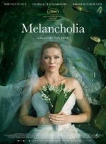

C'est avec grand plaisir que nous vous dévoilons aujourd'hui cette grande nouvelle. Grâce au travail de notre équipe, nous accueillerons Daniel Auteuil dans le cadre de
ce festival !
Grand acteur connu pour ses rôles dans La fille sur le pont, Le huitième jour ou encore Les sous-doués, il nous fera honneur de sa présence pour un discours suivi d'une
séance de dédicaces.
Réservez d'ors et déjà la date ! Le 6 août à 20h.
Vous avez prévu de passer la soirée à notre festival, ou tout simplement d'y passer un court moment ?
Que ce soit pour un repas complet ou un petit encas, nous avons
le plaisir de vous annoncer qu'un camion de restauration sera à votre disposition tout au long de ces 4 jours de festivités de 18h à 23h30 !
Nous remercions Nicolas et Lucie pour leur bienveillance et
leur professionnalisme quant à leur appproche de la cuisine.
A n'en pas douter un incontournable du festival !
Le festival étant dans un peu moins de 6 mois, nous commençons à vous dévoiler les films qui seront projetés.
Et c'est avec un enthousiasme certain que le premier film dévoilé
est....l'excellent La La Land ! Ce film mettant en scène Ryan Gosling et Emma Stone a rapidement trouvé son succès grâce à l'histoire touchante d'une actrice et d'un passionné de jazz à Los Angeles.
Il sera projeté en fermeture du festival, à savoir le 8 août à 22h30. Assurément un temps fort à ne pas manquer !
Restez connecté car nous annoncerons ici chaque semaine un nouveau
film à l'affiche !
C'est avec un grand plaisir que je poste ici pour la première fois afin de vous annoncer que notre site est en ligne !
Vous pourrez y retrouver les actualités du festival, la liste des
films allant être projetés ainsi que divers informations utiles pour planifier votre venue.
Nous remercions tout particulièrement l'agence WebMovie pour leur aide et le développement de ce site.
A très bientôt pour de prochaines actualités !
Fondée en 2018, "Les Films de Plein Air" est une association à but non lucratif. Notre objectif est d'apporter de la nouveauté et de proposer à tous les Parisiens (ainsi que les habitants des environs) des projections
de films en plen air. Et tout cela gratuitement !
Sous la houlette de cette association se cache Jennifer Viala, une Parisienne dévouée au cinéma depuis son plus jeune âge et diplômée des arts et métiers. C'est en voyageant aux Etats-Unis en 2015 qu'elle
découvrit ce type d'événements. Une fois rentré en France elle a pris le temps de faire mûrir ce projet afin de permettre l'accès à la culture pour tous.
"Le but de cette association est de permettre l'accès à des films de qualité à tous les Parisiens, dans un environnement atypique et convivial et tout cela sans avoir à débourser quoi que ce soit. En bref, un accès à la culture pour tous !"
Nous ambitionons donc l'organisation d'au minimum un festival de plein air tous les deux mois. Chaque festival sera consacré à un thème différent et permettra ainsi la variété dans
la programmation. Que ce soit avec des films d'auteur, de science-fiction ou historiques, il y en aura pour tous les goûts !
Grâce à ce site, retrouvez l'ensemble de l'actualité de notre association ainsi que des festivals organisés !
| Quoi ? | Pour cette première édition de notre festival, nous vous proposons pas moins de 12 films ! Le thème choisi est le cinéma d'auteur et vous permettra de découvrir ou redécouvrir
de nombreux classiques. Pour la liste complète des films avec le programme, consultez la section "Les films" ci-dessous. |
| Où ? | Au parc Monceau dans le 8ème arrondissement de Paris. Parc Monceau, 35 Boulevard de Courcelles, 75008 Paris |
| Quand ? | Du mardi 5 août au jeudi 8 août 2019. Chaque soir de 18h à minuit ! |
| Comment ? | L'accès à ce festival et aux projections est entièrement gratuit ! Les projections se feront en plein air. Néanmoins, pour des raisons logistiques il vous est recommandé d'indiquer votre participation dans la partie prévue à cet effet dans la liste des films projetés. |
| Affiche | Synopsis | Horaire | Réserver |
|---|---|---|---|
| Le quotidien des policiers de la BPM (Brigade de Protection des Mineurs) ce sont les gardes à vue de pédophiles, les arrestations de pickpockets mineurs mais aussi la pause déjeuner où l’on se raconte ses problèmes de couple ; ce sont les auditions de parents maltraitants, les dépositions des enfants, les dérives de la sexualité chez les adolescents, mais aussi la solidarité entre collègues et les fous rires incontrôlables dans les moments les plus impensables ; c’est savoir que le pire existe, et tenter de faire avec…Comment ces policiers parviennent-ils à trouver l’équilibre entre leurs vies privées et la réalité à laquelle ils sont confrontés, tous les jours ? | Lundi 5 août à 18h30 | ||
| Trois copains d'une banlieue ordinaire traînent leur ennui. Ils vont vivre la journee la plus importante de leur vie après une nuit d'émeutes provoquée par le passage à tabac d'Abdel Ichah par un inspecteur de police lors d'un interrogatoire. | Lundi 5 août à 20h30 | ||
| Condamné à six ans de prison, Malik El Djebena ne sait ni lire, ni écrire. A son arrivée en Centrale, seul au monde, il paraît plus jeune, plus fragile que les autres détenus. Il a 18 ans. D'emblée, il tombe sous la coupe d'un groupe de prisonniers corses qui fait régner sa loi dans la Centrale. Le jeune homme apprend vite. Au fil des "missions", il s'endurcit et gagne la confiance des Corses. Mais, très vite, Malik utilise toute son intelligence pour développer discrètement son propre réseau. Pour les Corses, il continue à jouer avec docilité son rôle de larbin. En coulisses, il profite de ses sorties régulières pour mettre en place un trafic de drogue entre la prison et les cités. Il parvient ainsi à s'imposer peu à peu jusqu'à obtenir l'estime des Musulmans, "l'autre" clan de la Centrale. Alors que débute une guerre de succession entre les deux bandes rivales, Malik est bien décidé à s'emparer du pouvoir. | Lundi 5 août à 22h30 |
Lundi 5 août à 18h30 |
Lundi 5 août à 20h30 |
Lundi 5 août à 22h30 |
| Affiche | Synopsis | Horaire | Réserver |
|---|---|---|---|
| Comme elle rentre de vacances, Lili, 19 ans, apprend par ses parents que Loïc, son frère jumeau, suite à une violente dispute avec son père, a quitté la maison. Loïc ne lui donnant pas de nouvelle, Lili finit par se persuader qu'il lui est arrivé quelque chose et part à sa recherche. Ce qu'elle va découvrir dépasse l'entendement. | Mardi 6 août à 18h30 | ||
| Téhéran 1978 : Marjane, huit ans, songe à l'avenir et se rêve en prophète sauvant le monde. Choyée par des parents modernes et cultivés, particulièrement liée à sa grand-mère, elle suit avec exaltation les évènements qui vont mener à la révolution et provoquer la chute du régime du Chah. Avec l'instauration de la République islamique débute le temps des "commissaires de la révolution" qui contrôlent tenues et comportements. Marjane qui doit porter le voile, se rêve désormais en révolutionnaire. Bientôt, la guerre contre l'Irak entraîne bombardements, privations, et disparitions de proches. La répression intérieure devient chaque jour plus sévère. | Mardi 6 août à 20h30 | ||
| Adapté d'un recueil de nouvelles de Craig Davidson, auteur américain controversé, De rouille et d'os, drame profond de Jacques Audiard, est une ode au courage, à la ténacité, au deuil et à l'entraide. Il raconte les destins croisés de Stéphanie, une jeune dresseuse d'orques qui perd ses deux jambes à la suite d'un accident et d'Ali, père d'un petit garçon de 5 ans, pauvre et paumé. Séparément, ils ne sont rien, mais ensemble, ils peuvent soulever des montagnes. | Mardi 6 août à 22h30 |
Mardi 6 août à 18h30 |
Mardi 6 août à 20h30 |
Lundi 5 août à 22h30 |
| Affiche | Synopsis | Horaire | Réserver |
|---|---|---|---|
| François est un jeune professeur de français dans un collège difficile. Dans sa volonté d'instruire sans pour autant domestiquer, François n'hésite pas à aller chercher les adolescents là où ça fait mal, les mettant souvent face à leurs limites afin de les motiver. Quitte à prendre parfois le risque du dérapage. | Mercredi 7 août à 18h30 | ||
|  | À l'occasion de leur mariage, Justine et Michael donnent une somptueuse réception dans la maison de la soeur de Justine et de son beau-frère. Pendant ce temps, la planète Melancholia se dirige vers la Terre... | Mercredi 7 août à 20h30 | |
| A 15 ans, Adèle ne se pose pas de question: une fille, ça sort avec des garçons. Sa vie bascule le jour où elle rencontre Emma, une jeune femme aux cheveux bleus, qui lui fait découvrir le désir et lui permettra de s'affirmer en tant que femme et adulte. Face au regard des autres Adèle grandit, se cherche, se perd, se trouve... | Mercredi 7 août à 22h30 |
Mercredi 7 août à 18h30 |
Mercredi 7 août à 20h30 |
Mercredi 7 août à 22h30 |
| Affiche | Synopsis | Horaire | Réserver |
|---|---|---|---|
| Serge Pilardos vient d'avoir 60 ans. Il travaille depuis l'âge de 16 ans, jamais au chômage, jamais malade. Mais l'heure de la retraite a sonné, et c'est la désillusion : il lui manque des points, certains employeurs ayant oublié de le déclarer ! Poussé par Catherine, sa femme, il enfourche sa vieille moto des années 70, une " Mammut " qui lui vaut son surnom, et part à la recherche de ses bulletins de salaires. Durant son périple, il retrouve son passé et sa quête de documents administratifs devient bientôt accessoire... | Jeudi 8 août à 18h30 | ||
| Pour impressionner et reconquérir sa femme, Simon, maître nageur à la piscine de Calais, prend le risque d'aider en secret un jeune réfugié kurde qui veut traverser la Manche à la nage | Jeudi 8 août à 20h30 | ||
| Au cœur de Los Angeles, une actrice en devenir prénommée Mia sert des cafés entre deux auditions. De son côté, Sebastian, passionné de jazz, joue du piano dans des clubs miteux pour assurer sa subsistance. Tous deux sont bien loin de la vie rêvée à laquelle ils aspirent… Le destin va réunir ces doux rêveurs, mais leur coup de foudre résistera-t-il aux tentations, aux déceptions, et à la vie trépidante d’Hollywood ? | Jeudi 8 août à 22h30 |
Jeudi 8 août à 18h30 |
Jeudi 8 août à 20h30 |
Jeudi 8 août à 22h30 |